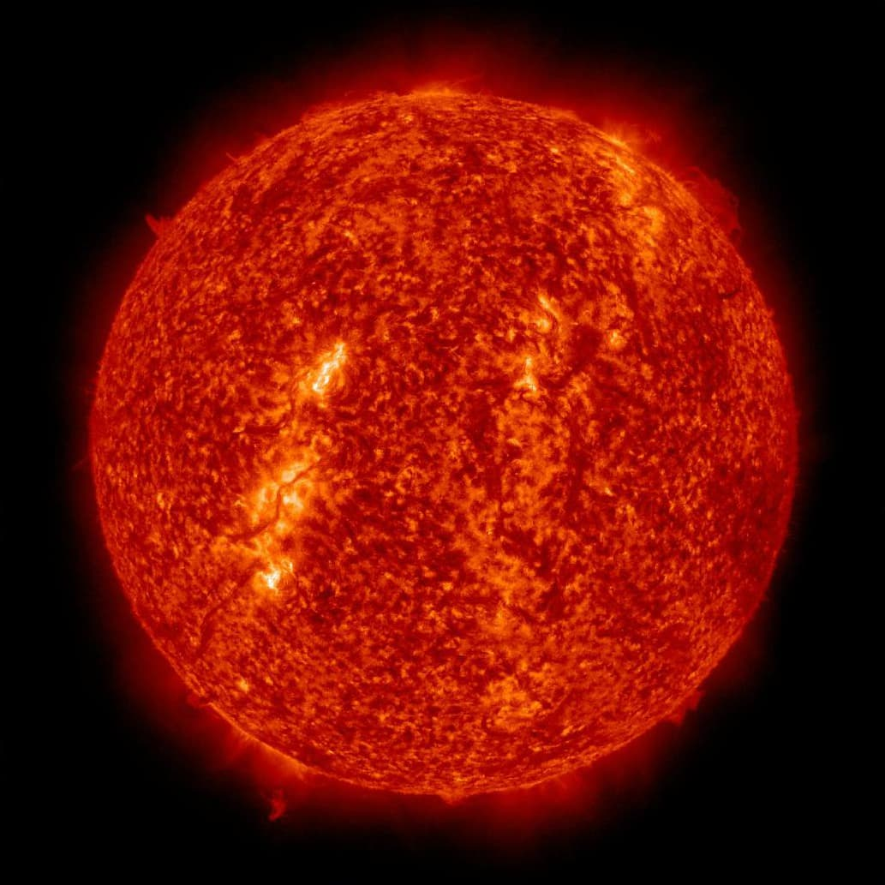

Красный гигант
Красный гигант — звезда поздних спектральных классов с высокой светимостью и протяжёнными оболочками. Примерами красных гигантов являются Арктур, Альдебаран, Гакрукс и Мира.
Наиболее распространенными красными гигантами являются звезды, находящиеся на диаграмме Герцшпрунга — Рассела вблизи конца так называемой ветви красных гигантов (в английской терминологии: RGB, red giant branch), но продолжающие процесс слияния водорода в гелий в оболочке, окружающей вырожденное гелиевое ядро. Другие красные гиганты: звёзды красного сгущения (на рисунке отмечено как RC, от англ. red clump) в холодной половине горизонтальной ветви, в ядрах которых происходит слияние гелия-4 в углерод-12 посредством тройной альфа-реакции; и звёзды асимптотической ветви гигантов (на рисунке отмечена как AGB, от англ. asymptotic giant branch), в которых термоядерное горение гелия происходит во внешней оболочке вырожденного углерод-кислородного ядра (иногда и с горением водорода в более внешней оболочке ядра).
Происхождение и строение
Звёзды в процессе своей эволюции могут достигать поздних спектральных классов и высоких светимостей на двух этапах своего развития: на стадии звездообразования и поздних стадиях эволюции.
Стадия, на которой молодые звёзды наблюдаются как красные гиганты, зависит от их массы — этот этап длится от ~ 103 лет для массивных звёзд с массами М ≈ 10 M⊙ и до ~ 108 лет для маломассивных звёзд с М ≈ 0,5 M⊙. В это время звезда излучает за счёт гравитационной энергии, выделяющейся при сжатии. По мере сжатия температура поверхности таких звёзд растёт, но вследствие уменьшения размеров и площади излучающей поверхности падает светимость. В конечном итоге в их ядрах начинается реакция термоядерного синтеза гелия из водорода (протон-протонный цикл, а для массивных звёзд также CNO-цикл), и молодая звезда выходит на главную последовательность.
На поздних стадиях эволюции звёзд после выгорания водорода в их недрах и образования «пассивного» (не участвующего в термоядерных реакциях) гелиевого ядра звёзды сходят с главной последовательности и перемещаются в область красных гигантов и сверхгигантов диаграммы Герцшпрунга — Рассела: этот этап длится ~ 10 % от времени «активной» жизни звёзд, то есть этапов их эволюции, в ходе которых в звёздных недрах идут реакции нуклеосинтеза. Звёзды главной последовательности с массами М < 10 M⊙ превращаются сначала в красные гиганты, а затем — в красные сверхгиганты; звёзды с М > 10 M⊙ — непосредственно в красные сверхгиганты. Перед тем как перейти в стадию красного гиганта, звезда проходит промежуточную стадию — стадию субгиганта. Субгигант — это звезда, в ядре которой уже прекратились термоядерные реакции с участием водорода, но горение гелия ещё не началось, так как гелиевое ядро недостаточно разогрето.
В современной астрофизике термин красные гиганты относится, как правило, к таким проэволюционировавшим звёздам, сошедшим с главной последовательности; молодые звёзды, не вышедшие на главную последовательность, обобщённо называют протозвёздами или по конкретному типу, например, звёзды типа T Тельца.
Ядерные источники энергии и их связь со строением красных гигантов
В процессе эволюции звёзд главной последовательности происходит «выгорание» водорода — нуклеосинтез с образованием гелия в pp-цикле и (для массивных звёзд) в CNO-цикле. Такое выгорание приводит к накоплению в центральных частях звезды гелия, который при сравнительно низких температурах и давлениях ещё не может вступать в термоядерные реакции. Прекращение энерговыделения в ядре звезды ведёт к сжатию и, соответственно, к повышению температуры и плотности ядра. Рост температуры и плотности в звёздном ядре приводит к условиям, в которых активируется новый источник термоядерной энергии: выгорание гелия (тройная гелиевая реакция или тройной альфа-процесс), характерный для красных гигантов и сверхгигантов. При температурах порядка 108 К кинетическая энергия ядер гелия становится достаточно высокой для преодоления кулоновского барьера между ядрами: два ядра гелия (альфа-частицы) могут сливаться с образованием крайне нестабильного изотопа бериллия 8Be: 4He + 4He = 8Be.
Большая часть 8Be, имеющего период полураспада всего 6,7×10-17 секунды, снова распадается на две альфа-частицы, но при столкновении 8Be с высокоэнергетической альфа-частицей может образоваться стабильное ядро углерода 12C: 8Be + 4He = 12C + 7,3 МэВ.
Несмотря на весьма низкую равновесную концентрацию Be8 (например, при температуре ~108 К отношение концентраций 8Be/4He ~ 10-10), скорость тройной гелиевой реакции оказывается достаточной для достижения нового гидростатического равновесия в горячем ядре звезды. Зависимость энерговыделения от температуры в тройной гелиевой реакции чрезвычайно высока: так, для диапазона температур T ≈ 1—2⋅108 К энерговыделение где Y — парциальная концентрация гелия в ядре (в рассматриваемом случае, когда водород почти «выгорел», она близка к единице).
Начало тройной гелиевой реакции в вырожденных ядрах маломассивных (масса до ~2,25 M⊙) красных гигантов имеет взрывоподобный характер, что приводит к резкому, но очень кратковременному (~104—105 лет) росту их светимости — гелиевой вспышке.
Следует, однако, отметить, что тройная гелиевая реакция характеризуется значительно меньшим энерговыделением, чем CNO-цикл: в пересчёте на единицу массы энерговыделение при «горении» гелия более чем в 10 раз ниже, чем при «горении» водорода. По мере выгорания гелия и исчерпания источника энергии в ядре возможны и более сложные реакции нуклеосинтеза, однако, во-первых, для таких реакций требуются всё более высокие температуры и, во-вторых, энерговыделение на единицу массы в таких реакциях падает по мере роста массовых чисел ядер, вступающих в реакцию.
Дополнительным фактором, по-видимому, влияющим на эволюцию ядер красных гигантов, является сочетание высокой температурной чувствительности тройной гелиевой реакции (и реакций синтеза более тяжёлых ядер) с механизмом нейтринного охлаждения: при высоких температурах и давлениях возможно рассеяние фотонов на электронах с образованием нейтрино-антинейтринных пар, которые свободно уносят энергию из ядра: звезда для них прозрачна. Скорость такого объёмного нейтринного охлаждения, в отличие от классического поверхностного фотонного охлаждения, не лимитирована процессами передачи энергии из недр звезды к её фотосфере. В результате реакции нуклеосинтеза в ядре звезды достигается новое равновесие, характеризующееся одинаковой температурой ядра: образуется изотермическое ядро.
{kind=link}
{kind=link}
{kind=link}